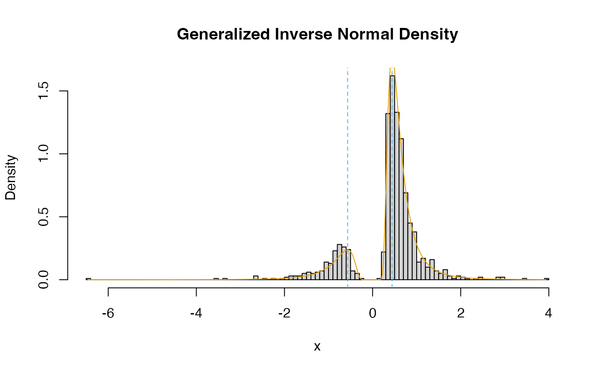

Density, distribution function, quantile function, and random generation for the generalized inverse normal distribution when parameterized by the shape, mean, and standard deviation of the inverse (reciprocal).
Usage
dginvnorm(x, alpha, mu = 0, tau = 1, log = FALSE)
pginvnorm(q, alpha, mu = 0, tau = 1, lower.tail = TRUE, subdivisions = 500L)
qginvnorm(p, alpha, mu = 0, tau = 1)
rginvnorm(n, alpha, mu = 0, tau = 1)
mginvnorm(alpha, mu = 0, tau = 1)
xginvnorm(alpha, mu = 0, tau = 1)Arguments
- x, q
vector of quantiles
- alpha
vector of shape parameters
- mu
vector of means of inverse.
- tau
vector of standard deviations of inverse.
- log
logical; if
TRUE, probabilities p are given as log(p).- lower.tail
logical; if
TRUE(default), probabilities are P(X<=x) otherwise, P(X>x).- subdivisions
The maximum number of subintervals used in
integrate().- p
vector of probabilities
- n
sample size
Value
Either a random sample (rginvnorm),
the density (dginvnorm), the tail
probability (pginvnorm), or the quantile
(qginvnorm) of the inverse normal distribution.
Functions
dginvnorm(): Density function.pginvnorm(): Probability function.qginvnorm(): Quantile function.rginvnorm(): Random generation.mginvnorm(): Mean.xginvnorm(): Modes.
References
Robert, C. (1991). Generalized inverse normal distributions. Statistics & Probability Letters, 11(1), 37-41. doi:10.1016/0167-7152(91)90174-P
Examples
set.seed(50)
samp <- rginvnorm(n = 1000, alpha = 4, mu = 0.5, tau = 1)
x <- seq(min(samp), max(samp), length.out = 500)
y <- dginvnorm(x = x, alpha = 4, mu = 0.5, tau = 1)
modes <- xginvnorm(alpha = 4, mu = 0.5, tau = 1)
graphics::hist(
samp,
freq = FALSE,
breaks = 100,
xlab = "x",
main = "Generalized Inverse Normal Density")
graphics::lines(x, y, col = "#E69F00")
graphics::abline(v = modes, col = "#56B4E9", lty = 2)
